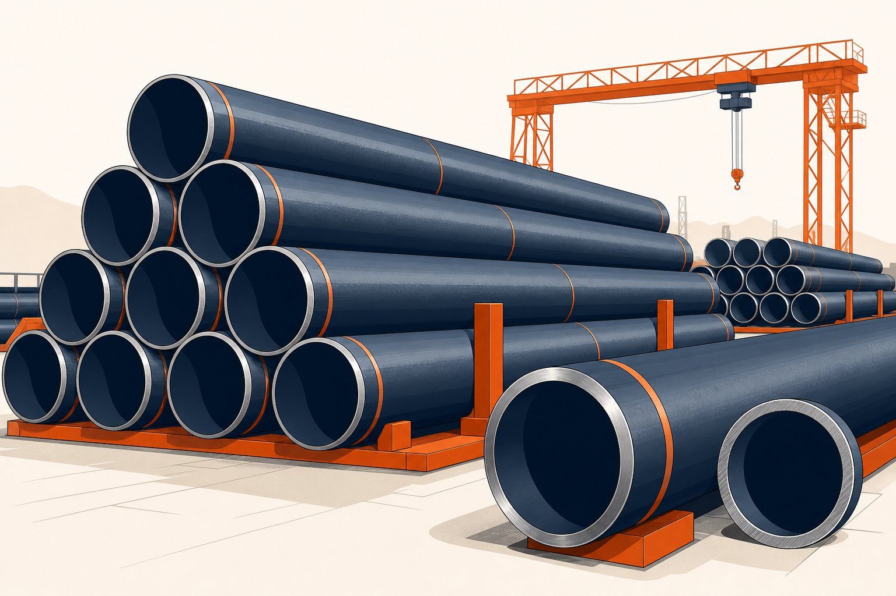

گرید ایکس۴۲ چیست؟
در خانواده لولههای خط انتقال، گریدها با حداقل حد تسلیم مشخصه شناخته میشوند. گرید ایکس۴۲ در میانه طیف گریدها قرار دارد: استحکامی بالاتر از گریدهای پایه و همچنان با جوشپذیری و شکلپذیری عالی. این تعادل، آن را به انتخابی اقتصادی برای طیف وسیعی از خطوط با فشار متوسط تبدیل کرده است.

خواص مکانیکی کلیدی
| خاصیت | مقدار مشخصه |
|---|---|
| حداقل حد تسلیم | حدود ۲۹۰ مگاپاسکال |
| حداقل استحکام کششی | حدود ۴۱۵ مگاپاسکال |
| سطوح موجود | سطح مشخصه محصول ۱ و ۲ |
| روشهای ساخت رایج | بدون درز، درزجوش مقاوم الکتریکی، درزجوش قوس زیرپودری |
مقادیر واقعی هر ذوب در گواهی مواد درج میشود و مبنای پذیرش است.
کاربردهای رایج
- خطوط فرعی انتقال نفت و گاز با فشار متوسط.
- شبکههای گاز شهری و خطوط تغذیه.
- خطوط انتقال آب و پساب در قطرهای بزرگ.
- خطوط داخل محوطه کارخانهها که الزام خط اصلی را ندارند.
- پروژههایی که جوشپذیری میدانی ساده اولویت دارد.
جوشپذیری و اجرا
معادل کربن پایین این گرید، پنجره جوشکاری وسیعی ایجاد میکند: نیاز کمتر به پیشگرم، ریسک کمتر ترک هیدروژنی و سهولت در جوشکاری میدانی. با این حال، روش جوشکاری باید همچنان مطابق دستورالعمل صلاحیتدار پروژه باشد و پارامترهای ورودی گرما کنترل شود.
چه زمانی ایکس۴۲ را انتخاب کنیم؟
- وقتی فشار طراحی با گرید متوسط پوشش داده میشود و نیازی به استحکام بالاتر نیست.
- وقتی اولویت پروژه، سهولت جوشکاری و اقتصاد کلی است.
- وقتی در دسترس بودن سریع در روش ساخت دلخواه اهمیت دارد.
- وقتی الزامات خاص خطوط پرفشار اصلی (چقرمگی بسیار بالا، الزامات ترکخوردگی) مطرح نیست.
نکات استعلام خرید
- گرید و سطح مشخصه محصول را صریح ذکر کنید.
- روش ساخت مورد پذیرش پروژه را مشخص کنید.
- نوع انتها، طول شاخه و پوشش مورد نیاز را بنویسید.
- گواهی مواد و گزارش تستها را درخواست کنید.
- در صورت سرویس ترش، الزامات تکمیلی را اضافه کنید.
مقایسه سریع با گریدهای همخانواده
در کنار این گرید، گریدهای بالاتر مانند ایکس۵۲ و ایکس۶۵ حداقل حد تسلیم بیشتری دارند و در فشار یکسان دیواره نازکتری ممکن میکنند؛ اما معادل کربن بالاتر و قیمت هر تن بیشتری نیز دارند. اگر فشار طراحی خط با گرید ایکس۴۲ پوشش داده میشود، ارتقای گرید معمولاً توجیه اقتصادی ندارد و فقط هزینه را افزایش میدهد.
- برای خطوط فرعی و شبکههای توزیع: این گرید معمولاً کافی و اقتصادی است.
- برای خطوط اصلی پرفشار: مقایسه اقتصادی با گریدهای بالاتر انجام شود.
- برای نقاط اتصال به خطوط موجود با گرید متفاوت: دستورالعمل جوش اتصال ناهمجنس تهیه شود.
نشانهگذاری و ردیابی لوله ایکس۴۲
ردیابی لولهها از کارخانه تا نقطه نصب، یکی از ارکان تضمین کیفیت خطوط انتقال است و در گرید ایکس۴۲ که در پروژههای متعدد با سازندگان مختلف خریداری میشود، اهمیت بیشتری دارد. هر شاخه لوله باید نشانهگذاری شامل استاندارد، گرید، روش ساخت، مشخصه ذوب یا حرارت و علامت سازنده را داشته باشد و این اطلاعات قبل از بارگیری با مدارک خرید تطبیق و ثبت شود. در پروژههای بزرگ، معمولا نظام ردیابی با کدگذاری اضافی مانند شماره یکتای شاخه یا کد رنگی تکمیل میشود تا در انبار سایت و هنگام توزیع بین جبهههای کاری، اختلاط گریدها رخ ندهد. اهمیت این نظام در دو نقطه آشکار میشود: اول در بازرسیهای حین ساخت، وقتی لازم است گواهی متریال یک جوش خاص پیدا شود و دوم در ارزیابیهای پس از بهرهبرداری، وقتی یک نقطه مشکوک نیازمند بررسی سابقه ساخت است. در پروژههایی که بخشی از لولهها پس از تحویل انبار میشوند، حفاظت از خوانایی نشانهها در برابر زنگزدگی و آسیب مکانیکی نیز باید دیده شود؛ نشانهای که خوانا نباشد عملا ردیابی را قطع میکند. برای خریدار، توصیه عملی این است که الزامات نشانهگذاری و حداکثر فاصله بین نشانهها را در سفارش مشخص کند و در بازرسی قبل از حمل، نمونهبرداری تصادفی از خوانایی و صحت نشانهها انجام دهد.
در پروژههایی که چندین سازنده لوله مشارکت دارند، یکنواختی فرمت نشانهگذاری و نظام کدگذاری را در اسناد خرید الزام کنید؛ تفاوت روشها بین سازندگان، کار ردیابی و تطبیق مدارک را به شکل قابل توجهی دشوار میکند.
جمعبندی
گرید ایکس۴۲ انتخابی متعادل و اقتصادی برای خطوط فشار متوسط است؛ به شرطی که سطح مشخصه، روش ساخت و مدارک بازرسی آن دقیق استعلام شود.
سوالات رایج
معنی عدد ۴۲ در نام گرید چیست؟
عدد گرید بیانگر حداقل حد تسلیم مشخصه بر حسب هزار پوند بر اینچ مربع است؛ یعنی این گرید حداقل حد تسلیمی حدود ۲۹۰ مگاپاسکال دارد. حداقل استحکام کششی آن نیز حدود ۴۱۵ مگاپاسکال است.
این گرید برای چه فشارهایی مناسب است؟
برای خطوط فشار متوسط و پایین مانند شبکههای توزیع، خطوط فرعی و سرویسهای عمومی مناسب است. برای خطوط اصلی پرفشار امروزی معمولاً گریدهای بالاتر انتخاب میشوند.
آیا در هر دو سطح مشخصه محصول موجود است؟
بله؛ این گرید در هر دو سطح عرضه میشود و برای خطوط حساستر، سطح با الزامات تکمیلی همراه تست ضربه و کنترلهای بیشتر قابل سفارش است.
چرا جوشپذیری این گرید خوب است؟
معادل کربن و عناصر آلیاژی پایین در این گرید، نیاز به پیشگرم شدید را کاهش میدهد و روشهای جوشکاری میدانی را سادهتر میکند؛ ویژگیای که در خطوط طولانی اهمیت زیادی دارد.
مطالب مرتبط
- راهنمای لوله خط انتقال؛ سطوح مشخصه و گریدها
- مقایسه گریدهای ایکس۵۲، ایکس۶۰ و ایکس۶۵
- لوله خط انتقال گرید ایکس۵۲
- راهنمای جامع لوله مانیسمان
- استاندارد ابعاد لوله کربنی (ASME B36.10M)
برای استعلام لوله خط انتقال، گرید، سطح مشخصه محصول، روش ساخت، نوع انتها و شرایط سرویس را مشخص کنید تا پیشنهاد فنی-مالی دقیق ارائه شود.
مشاهده صفحه محصول ← ثبت RFQ همین محصولتامین این تجهیزات را به پیشرو تجهیز فرتاک بسپارید
شرکت پیشرو تجهیز فرتاک تامینکننده تخصصی تجهیزات صنعتی برای پروژههای نفت، گاز، پتروشیمی، فولاد و نیروگاهی است. برای دریافت پیشنهاد فنی و قیمت، استعلام (RFQ) خود را ثبت کنید تا کارشناسان مهندسی فروش در کوتاهترین زمان پاسخ دهند.
- تامین لوله انتقاللوله خط انتقال در گریدهای مختلف با گواهی مواد
- تامین تجهیزات صنایع نفت و گازپکیج مواد پایپینگ مطابق مدارک پروژه